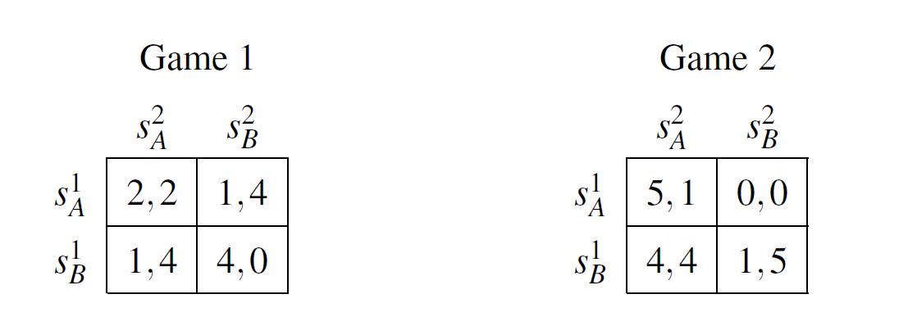

Homotopy Methods for solving Non-Degenerate Bimatrix Games
This project explores the homotopy methods described in [Herings, P. J.-J. and Peeters, R. (2010). Homotopy methods to compute equilibria in game theory. Economic Theory, 42(1):119–156.], which are applied to solve for Nash equilibria in non-degenerate bimatrix games. The homotopy method defines a path that eventually leads to a Nash equilibrium. This path coincides with the Lemke-Howson algorithm, which can be implemented by pivoting, i.e., the change of basis for a given system of linear equations. Thus, the search for a Nash equilibrium can be represented as a linear complementarity problem, which is solvable.
 Consider these two non-degenerate bimatrix games. There are two players, 1 and 2, who can both choose between strategy A or B. The entries in the matrices are the players' payoffs for each possible outcome, where Player 1's payoff is always on the left side of the comma, while Player 2's payoff is on the right side. The algorithm requires a starting point, which can be an arbitrary strategy of any player. These games can be represented by a polyhedron. Traversing its edges leads to a Nash equilibrium. Next let us consider the graphical representation of the polyhedron for the simple examples Game 1 and Game 2.
This graph shows the homotopy path after the initial choice of strategy A by Player 1, represented by the blue marked line (I). After each step, we must switch between the left side, representing Player 1, and the right side, representing Player 2. Therefore, the second step is located on the right side, also in blue and marked (II). After six steps, Sigma 1 and Sigma 2 are reached, the Nash equilibrium of Game 1, with Sigma 1 representing Player 1's strategy and vice versa. In this example, the mixed strategy Nash equilibrium ((2/3,1/3),(3/4,1/4)) is reached. This means that Player 1 plays A 2/3 of the time and B 1/3 of the time, while Player 2 plays A 3/4 of the time and B 1/4 of the time. Note that this is the unique Nash equilibrium of Game 1.
In contrast, Game 2 has three Nash equilibria, two in pure strategies ((1,0),(1,0)), ((0,1),(0,1)) and one in mixed strategies ((1/2,1/2),(1/2,1/2)). If you visit my GitHub repository, you will be able to observe which of these Nash equilibria is achieved by the homotopy methods. In fact, it is path-dependent, or more precisely initial-stratey-dependent, which Nash equilibrium is reached. The homotopy method, however, is only useful to find one Nash equilibrium, but it is insufficient to find all. For example, the mixed strategy equilibrium of Game 2 is never reached, regardless of the initial strategy chosen. If you would like to try this out for yourself, please click Github below and fork the repository. By the way, the algorithm used there is also capable of solving more complex games.